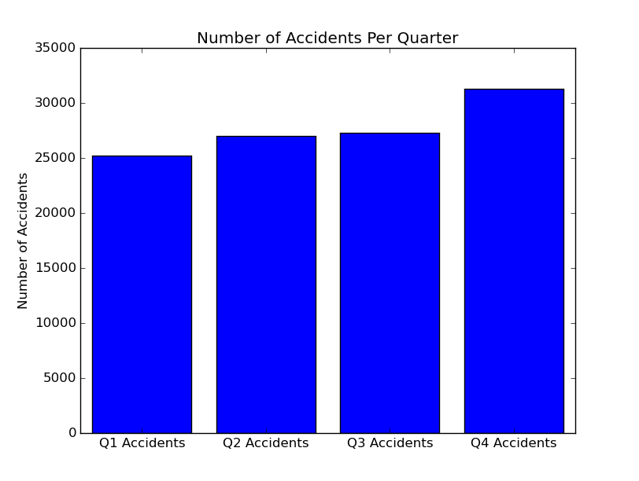

Junior at Illinois State University, studying Computer science.
Github ProfileMy github has a few of my projects including a game, an image analyzer, and this website's source.
I can be contacted at nfriche (at) ilstu (dot) edu
The following are the results of my data analysis project at RedBirdHacks 2016. I will post my results as the event goes on. All code and data can be found here
For a data set to be considered a part of big data, it commonly must have some or all of the 4 v's. These are volume, variety, velocity, and veracity. For my project, I chose the data set of all traffic accidents in the state of Maryland for 2015(available here) This data set includes a ton of information on every traffic accident in the state of Maryland during 2015. The goal is to identify, model, and comment on trends present in the data, such as the number of DUI related traffic accidents, rate of traffic accidents during poor weather, and other factors.
This data set was released by the government of the state of Maryland on February 11th 2016 and satisfies several of the 4 v's of big data. With almost 19,340,987 points of data to consider, this data definitely falls into the high volume category. The data also contains a high amount of variety which satisfies the second v. The third v is veracity which is the trustworthiness of the data, and considering that this data was published by the government, I believe it to be accurate. The final v is velocity and our data does not satisfy this principal because no new data is being analyzed, however 3/4 is certainly sufficient to declare this data set as being a part of big data.
Throughout the event I will be updating this page with my findings.
Below is the first chart made of the event. The number of accidents per quarter. There is a noticeable trend that accidents happen more in quarter 4. Could this be due to bad weather? Lets find out!
It looks like men are much riskier